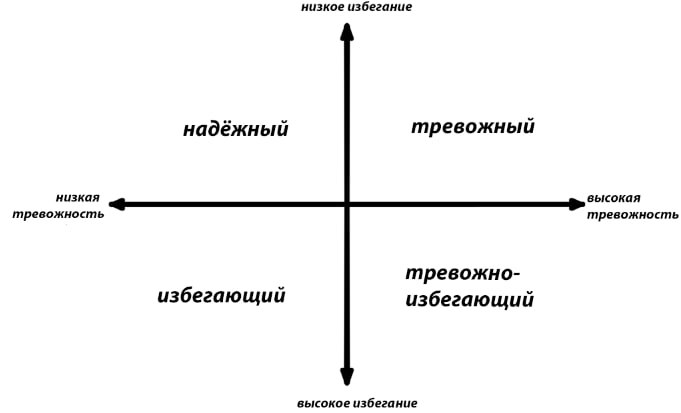

В современной психологии выделяются четыре типа привязанности в отношениях: надежный, тревожный, избегающий и тревожно-избегающий — последний может также называться «амбивалентным» или «дезорганизованным». Об этих четырех типах мы сегодня поговорим.
Что такое типы привязанности? Тео́рия привя́занности
Перед тем, как начинать говорить о самых типах, стоит вообще в целом понять, что такое привязанность. Тео́рия привя́занности — психологическая модель, которая описывает динамику долгосрочных и краткосрочных межличностных отношений. Однако «теория привязанности не сформулирована, как общая теория отношений. Она затрагивает только их определённую грань». То есть, исходя из названия, типы привязаности - это то, как проявляется наша привязанность в долгосрочных или, наоборот, краткосрочных отношениях.
Виды и характеристики
Как же формируются наши типы привязанности? Все зависит от нашего детства, а если быть точнее, как к нам относились и как нас воспитывали наши родители/"значимый родитель". Кто же такой этот "значимый родителей" или же "значимый взрослый", о котором постоянно упоминается? Значимый взрослый — это не всегда мать, это может быть няня, бабушка или другой взрослый, который обеспечивал безопасность и давал эмоциональный отклик. Подробнее о типах и их формации читайте ниже.
Надёжный тип привязанности
Надёжный тип привязанности самый распространенный тип. Не уверена, можно ли называть типи привязанности лёгкими, но он определенно самый лучший и лёгкий в восприятии. "Я классный и ты классный".
Люди с надёжным типом, в детстве не подвергались физическому или психическому насилию, скорее наоборот. У таких детей были понимающие родители. Если ребёнку нужна помощь - родители помогут. Если же ребенок что-то натворил, не будет ругани, оскорблений, или причинения боли. Родители сядут и поговорят с ребенком, объяснят, почему так не надо делать. Ребенок уверен, что его всегда поймут, что он является личностью, несмотря на то, сколько ему лет, а также, он уверен, что всегда будет услышан.
И очень важный момент: у надежных присутствовали оба родителя, мама и папа, никакого "значимого родителя/взрослого".
Такие люди не нуждаются в подтверждение чувств, ведь они уверены в своем партнёре. Я бы сказала, это самый сбалансированный тип привязанности. Такие люди четко видят границу, и не станут указывать в том или ином деле. Люди с надёжным типом, как правило, ищут партнёра со схожими интересами и больше всего таким людям подходят такой же надёжный человек, как и они сами. Таким людям легко переносить отказ, признаваться в чувствах, и тому подобное. У таких людей, за частую, нормальная самооценка, которою они не будут привязывать к партнеру, что и помогает им достаточно легко переживать расставание. Они твердо стоят на фундаменте, что сделали их родители. Они свободные люди и не потерпят контроля, как и игнорирования. Я бы сказала люди с надёжным типом привязанности - это золотая середина.
Тревожный тип привязанности
Тревожный тип привязанности характеризуется тем, что человек желает слиться с партнёром в единое целое. "Я не очень, а ты классный".
Люди с тревожным типом, в детстве получали любовь и заботу, но в какой-то момент, она пропадала. Это могло быть отстранения значимого родителя или же он просто был в отъезде.
Такому человеку постоянно нужно доказывать свою любовь, ведь он попросту не доверяет своему партнеру. Тревожный тип склонен к ревности и именно он, из-за своего недоверия, ставит отслеживающие программы на телефон партнёра. Неудачи они воспринимают как за проигрыш всей своей жизни, поэтому, за частую, склонны к пессимистическому взгляду на жизнь. Такой человек сколонен к переживанием о том, по типу, что скажут люди. Также тревожники имеют страх одиночества и независимости. В отношениях он буквально не оставит партнеру свободной минуты, ибо не имеет своих желаний и потребностей.
К счастью, это можно исправить, если человек будет искренне заинтересован в изменения своей жизни, он сможет проработать свой тип со специалистом.
Избегающий тип привязанности
Избегающий тип привязанности или ещё его называют избегающе-отвергающий тип, проявляется в том, что человек всячески избегает начала отношений или же, если он уже в них состоит, перехода на следующие уровни, как, к примеру, поход в ЗАГС. "Я классный, а ты не очень". Собственно, что мы слышим из названия. Избегающий тип позиционирует себя, как одиночку или же длительный период времени удерживает партнёра на расстоянии.
Такой тип может проявиться в связи с разводом родителей, или же с собственным разрывом отношений. Такие дети в детстве воспитывались сильными и независиммыми личностями. Значимый родитель буквально игнорировал эмоциональные потребности ребенка, сухо реагировал на, в принципи, своего ребенка, тем самым подавляя его.
Избегающие характеризуется следующими факторами: нежелания вступать в долгосрочные отношения, скорее их привлекают краткосрочные связи без обязательств; замкнутость, нежелания делиться с партнёром какими-либо факторами, по типу, планы, переживания; по выходу из отношений, необоснованная критика, придирки к мелочам, обиды без весомой на то причины, унижения партнёра; идиальзация бывшего опита отношений нынешнему партнёру; проблемы с доверием; желание свободы, независимости; скупи к проявлению внимание по отношению к партнеру, в том числе, во время интимной близости; желания держать под своим контролем развития отношений, без учёта интереса партнёра, существуют только их правила; везде выступают доминирующей стороной, это, как правило, могут быть не только романтические отношения.
Тревожно-избегающий тип привязанности
Людей с тревожно избегающим типом привязанности очень и очень мало. Всего 10% от всего населения. Этот тип самый редкий, но это не повод этим гордиться. Тревожно-избегающий самый сложный тип из всех существующих. "Ты не очень, и я не очень".
С этим типом очень маленький шанс построить адекватные отношения, а если быть откровенным, его вообще нет. Они абсолютно всегда становяться головной болью для своей второй половинки. Они не совместимы абсолютно ни с каким типом. Сначала, они всем видом показывают свою любовь и привязанность, но потом начинают отстраняться, избегать, и в итоге бросают партнёра, очень жестоко и резко.
Дети, которые были подвергнуты тяжёлому психо-эмоциональному насилию, в будущем становятся тревожно-избегающими. Их унижали, оскорбляли, подавляли, обесценивали, обвиняли. Быть может, применяли физические методы воздействия, но чаще давили именно морально. За частую у тревожно-избегающих типов привязанности был один значимый родитель, второй же был либо жестоко подавлен доминирующим либо и вовсе отсутствовал. Труднее всего девочкам, которые лишились отцовской любви и в будущем они пытаются компенсировать то, чего не получили в детстве. Полюбят или женатого или бабника, но потом они все равно почувствуют холод и сбегут.
Всему виной неопределенность психики. С одной стороны, значимый родитель даёт любовь, ласку, заботу, и покрывает все потребности, а с другой, ненавидит, ущемляет, подавляет, унижает, применяет череду инструментов эмоционального насилия. И это все может произойти в одну минуту. сейчас он тебя обнимает, а уже в следующую секунду, говорит какая ты бестолочь. В итоге психика человека навсегда принимает только оборонительную позицию и не выходит из состояние неопределенности. Иными словами, психика такого человека не воспринимает любовь и заботу, ведь приучена к тому, что после обязательно последует насилие.
В процессе ожидания этого насилия, человек начинает себя накручивать, выискивать признаки возможно надвигающегося прессинга. В этот момент он отстраняется, а на все вопросы партнёра, по типу, что случилось, последуют невразумительные ответы, человек будет пытаться найти какое-то объяснение своего поведения. Естественно, не найдя ничего лучше, они сваливают всю вину на партнёра, и уходят со словами "мне одному/ой лучше".
Исправить это можно только с длительной помощью специалиста, и то не факт, ведь им нет спасения. В детстве ребёнку сломали психику. Сами по себе детские травмы очень сложно проработать, а здесь просто мизерный процент выздоровления. Эти люди буквально обречены. И даже не важно, с каким человеком этот тип состоит в отношениях. Хороший он человек или нет, понимающий или наоборот, тиран или божий цветочек. Это абсолютно неважно. У тревожно-избегающего типа есть два варианта - либо беда в жизни хороших, либо жертва в жизни плохих.
Личное мнение и предупреждения
Не смотря на всю информацию озвученную выше, не стоит ставить крест на себе и личной жизни. Вся информация сформулирована с помощью статистики, но и в ней же есть исключение, поэтому если вы являетесь представителем какого-то из этих типов, не нужно отчаиваться. Всё зависит от нас самих и нашего восприятия. В случаи чего, все можно исправить с помощью специалиста или же научиться с этим жить.